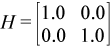

2.1.2.1.11. rotm¶
Performs modified Givens rotation of points in the plane.
rotmsupports the following precisions.
T
float
double
Description
Given two vectors x and y, each vector element of these
vectors is replaced as follows:

for i from 1 to n, where H is a modified Givens
transformation matrix.
2.1.2.1.11.1. rotm (Buffer Version)¶
Syntax
-
void
onemkl::blas::rotm(sycl::queue &queue, std::int64_t n, sycl::buffer<T, 1> &x, std::int64_t incx, sycl::buffer<T, 1> &y, std::int64_t incy, sycl::buffer<T, 1> ¶m)¶
Input Parameters
- queue
The queue where the routine should be executed.
- n
Number of elements in vector
x.- x
Buffer holding input vector
x. The buffer must be of size at least (1 + (n- 1)*abs(incx)). See Matrix and Vector Storage for more details.- incx
Stride of vector
x.- y
Buffer holding input vector
x. The buffer must be of size at least (1 + (n- 1)*abs(incy)). See Matrix and Vector Storage for more details.- incy
Stride of vector
y.- param
Buffer holding an array of size 5. The elements of the
paramarray are:param[0] contains a switch,flag,param[1-4] contain h11, h21, h12, and h22 respectively, the components of the modified Givens transformation matrixH.Depending on the values of
flag, the components ofHare set as follows:flag =-1.0:
flag =0.0:
flag =1.0:
flag =-2.0:In the last three cases, the matrix entries of 1.0, -1.0, 0.0 are assumed based on the value of
flagand are not required to be set in theparamvector.
Output Parameters
- x
Buffer holding updated buffer
x.- y
Buffer holding updated buffer
y.
2.1.2.1.11.2. rotm (USM Version)¶
Syntax
-
sycl::event
onemkl::blas::rotm(sycl::queue &queue, std::int64_t n, T *x, std::int64_t incx, T *y, std::int64_t incy, T *param, const sycl::vector_class<sycl::event> &dependencies = {})¶
Input Parameters
- queue
The queue where the routine should be executed.
- n
Number of elements in vector
x.- x
Pointer to the input vector
x. The array holding the vectorxmust be of size at least (1 + (n- 1)*abs(incx)). See Matrix and Vector Storage for more details.- incx
Stride of vector
x.- yparam
Pointer to the input vector
y. The array holding the vectorymust be of size at least (1 + (n- 1)*abs(incy)). See Matrix and Vector Storage for more details.- incy
Stride of vector
y.- param
Pointer to an array of size 5. The elements of the
paramarray are:param[0] contains a switch,flag,param[1-4] contain h11, h21, h12, and h22 respectively, the components of the modified Givens transformation matrixH.Depending on the values of
flag, the components ofHare set as follows:flag =-1.0:flag =0.0:flag =1.0:flag =-2.0:In the last three cases, the matrix entries of 1.0, -1.0, 0.0 are assumed based on the value of
flagand are not required to be set in theparamvector.- dependencies
List of events to wait for before starting computation, if any. If omitted, defaults to no dependencies.
Output Parameters
- x
Pointer to the updated array
x.- y
Pointer to the updated array
y.
Return Values
Output event to wait on to ensure computation is complete.
Parent topic: BLAS Level 1 Routines